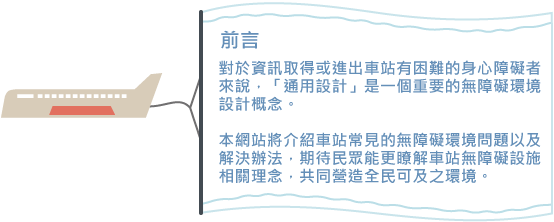
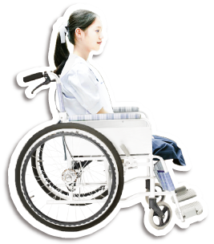
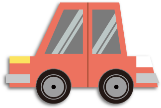
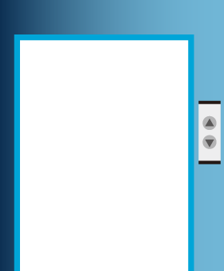
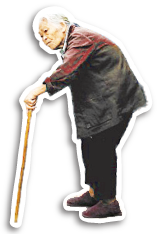
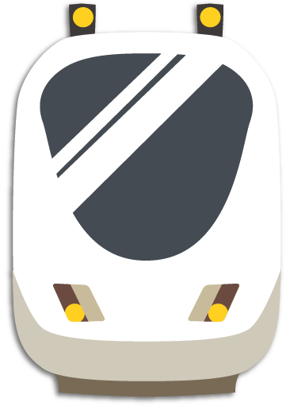

-  
- 

- 
-  
「車站」，是我們外出旅遊、朋友聚會或商務洽公時，經常接觸的公共空間。對於資訊取得或進出車站有困難的聽覺功能損傷者、視覺功能損傷者、行動不便者以及心智功能損傷者來說，「通用設計」是一個重要的無障礙環境設計概念。有鑑於無障礙設施的車站，對於促進身心障礙者社會參與的重要性，本單張將介紹車站常見的無障礙環境問題以及解決辦法。此次邀請到「台灣可及環境設計協會」協助繪製圖解說明，期待讀者能更了解車站無障礙設施相關理念，共同營造全民可及之環境。
停車位旁的人行道開口位置不正確或坡度太陡，導致難以使用。
解決方案：在人行道適當位置設置路緣斜坡，讓所有人方便使用。
車站出入口前設置階梯，造成輪椅使用者或推車無法順利通過。
解決方案：在出入口增設緩坡道讓所有人可以輕鬆出入。
售票口檯面的高度高於輪椅使用者的視野，造成站務員與輪椅使用者難以對話。
解決方案：適當售票口高度讓所有人都能方便購買車票，讓所有人方便使用。
驗票口的淨寬不足，常讓輪椅使用者或攜帶大型行李者無法順利通過驗票口。
解決方案：適當驗票口寬度可以讓輪椅使用者或攜帶大型行李的旅客方便進出。
月台間缺少升降設備，讓輪椅使用者或攜帶大型行李者在需要跨月台搭車時無法快速的通行。
解決方案：在合適的位置設置升降設備，大大增加行動不便及攜帶大型行李旅客的便利性。
列車與月台之間的高低落差與間隙，都增加乘客進出列車的困難與危險性。
解決方案：縮小列車與月台間的間隙與高差，或者善用活動式緩坡，提供旅客安全的乘車環境。